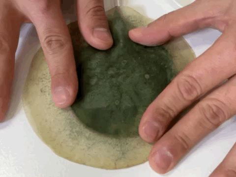
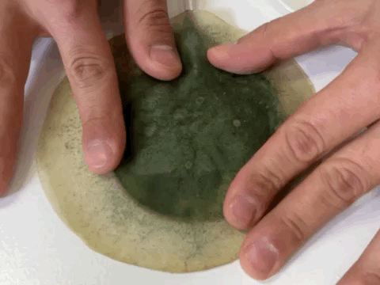
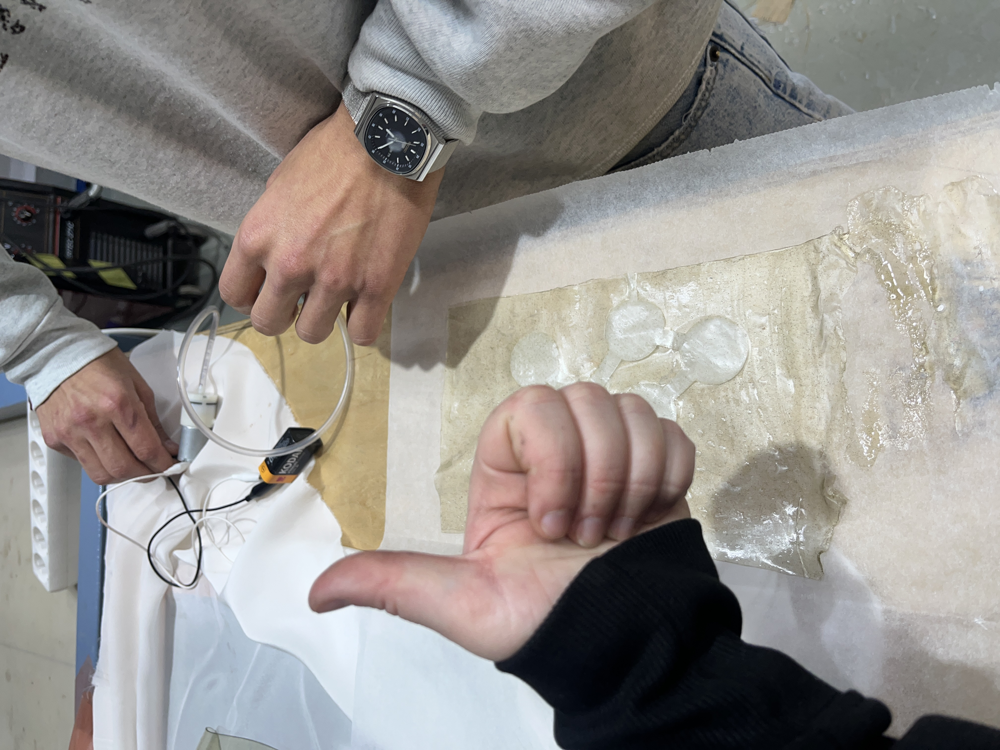
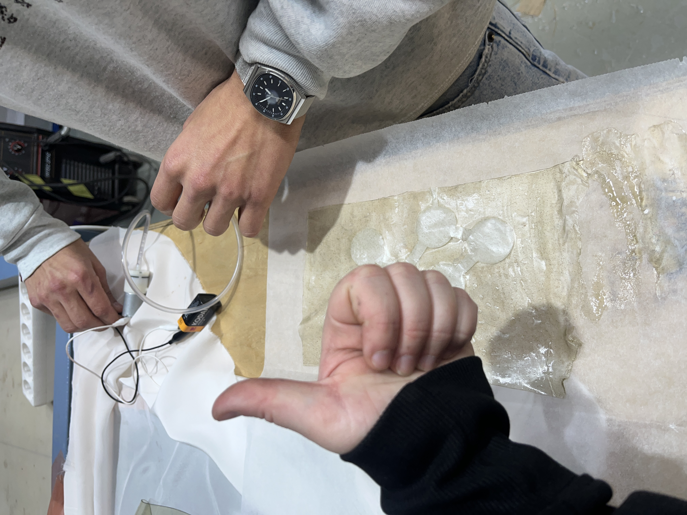

Go Back Term2

Keywords: pneumatics, pneubotics, expansion, contraction, movement, inflation, deflation, programmed feedback, kinetics, actuators, chambers, patterns, bending, shaping, environments, air, flow, gas, foam, fluid, relationships, haptics, muscles, arms, skin, touch, feel, softness, silicones, bio-silicones, bio-mimetics
Subfield of robotics that integrates compliant materials, soft and flexible, instead of rigid and stiff ones, into its fabrication. This difference in materiality allows the parts and links of robots to act and perform in different environments, bringing them closer to human interaction.
Watch this tutorial video: Soft Robotic Tutorial

3 Chamber Soft Pneumatic Actuator by Dino Rossi from Adaptive Systems Lab on Vimeo.
Watch a video example: Soft Robotics Video Example
Explore this project: Emotive Soft Robotics Project
Visit the Fabricademy girl's website: Fabricademy Girl Website


Biopolymer: 3g Alginate Sodium
Plasticizer: 7.5 ml Glycerine
Additive: 1/10 ts Mica
3g Olive oil
Solvent: 50ml Water
Texture: flexible
At the same time, we tried two different recipes with Alginate Sodium, so non heat-cooking recipes. We let the material rest on two surfaces: textile and a mould.
Comments of the result: In both cases we realized how adding vegetal carbon to the mixture was turning the material drier.

240 ml water
48g glicerine (flexi)
48g gelatine
We add a bit of spirulina and mica pigment to give a touch of color to the sample.


We found this recipe in the documentation from a previous Fabacademy student, which used this combination to create bio-based soft robots. We recreated it in different varieties and it proved to be exceptional for the scope. As we did for the Agar agar recipe, we let the material dry on different materials: an acrylic mould, a sheet of acrylic with a very thin layer of textile and on textile.
Acrylic Mould: This proved to be the most flexible and versatile, also the material didn’t shrink in the mould.
Acrylic + Textile: This was impossible to take away from the textile because of the thin thickness of the material, so it eventually remained embedded to it.
Textile: This one turn out very resistant, but not very flexible. It might be good for other applications though.
Comments of the result:
- We love how the color turned out in the material and the effect it has created.
- Quite flexible
- The sample we like the most.
- We have noticed a difference in the result of the biomaterial depending on the base on which we let it rest. We have let it rest on textile and on acrylic.
Water 300ml
Agar agar 10g
Glycerol
- Rigid 4g
- Normal 16g
- Elastic: 32g
Drying:
Working time: 5 min
Drying Time: 7 days
Place: dry place
We add a bit of mica pigment to give a touch of color to the sample.


We tried to let the Agar Agar based recipe in 3 different materials: acrylic (mould), textile and a canvas. The samples dried quickly and the recipe turned out not to be elastic enough. All of them, especially the one in the mould, shrinked or got broken
Comments of the result:
It breaks very easily (˚ ˃̣̣̥⌓˂̣̣̥ )
Flexible but it breaks.
We like the result of the color.
We first tried with a mould, leaving some space on the inside to let the air inflate, and a thinner layer to close the structure. We then used gelatine and pressed the structure for 1 night to attach the two layers together.


 *Acrylic mold second try first sample*
*Acrylic mold second try first sample*
 *Small samples of Agar Agar and Amaya's recipe.*
*Small samples of Agar Agar and Amaya's recipe.*
 

 

Steps:
1. Cut the desired shape with the laser cutter.
2. In the heat press, adhere the following layers in this order: a piece of biomaterial, in the middle, parchment paper with the shape, and another piece of biomaterial. At a temperature not exceeding 35 degrees, place it in the heat press to fuse and vacuum-seal the shape along with the parchment paper.
Comments: It works better, also there are some parts where the air escapes but not as much.

We saw some documentation about welding thin layers of plastic together, this could be done with a soldering iron or through the light beam of the laser cutter. So we tried with different parameters to gain results but it turned out to be very quickly. This process is, in fact, influenced both by the machine parameters (such as speed, power, focus) and by the material features, mostly regarding its thickness.
Comments: After some attempts, we realized how the technique has potential but needs a lot of time and attention to find the correct equilibrium in between parameters in action. We think that maybe appropriate research on the field could be interesting and we may try that again soon. Also, the focus parameter is probably the most important, since the width of the light beam really influenced the outcome of the experiments.
Documentation presentation Fabricademy
Fablab Barcelona - Biomaterials